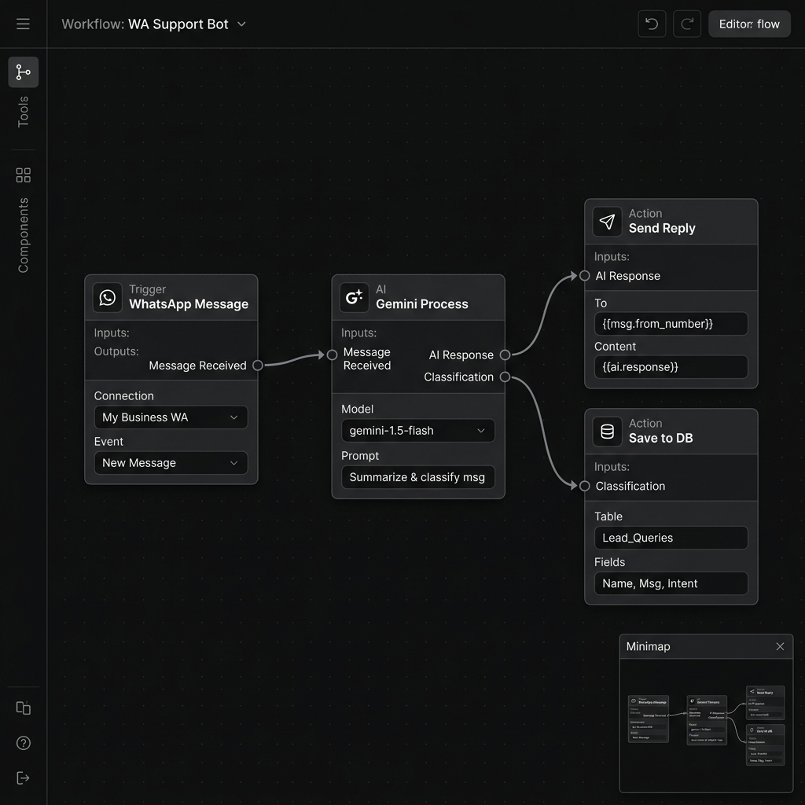

Ecossistema Talos
Projeto de maior impacto técnico. Motor pesado orquestrando sockets persistentes do WhatsApp e IA, aliado a um painel complexo que processa PDFs, faz web scraping e desenha fluxos interativos através de nós.
Contexto & Problema
Empresas precisam automatizar atendimento via WhatsApp com inteligência real — não respostas pré-definidas. A visualização de automações em interfaces de lista dificulta a auditoria quando existem milhares de etapas lógicas. Era necessário um motor de IA acoplado a uma interface visual de grafos.
Arquitetura & Stack
Separação majestosa de responsabilidades em dois sistemas independentes:
- bk-talos-engine (Motor): Express/Node.js gerenciando sockets persistentes do WhatsApp (Baileys), processamento de IA com Google Generative AI (Gemini), webhooks e filas de processamento.
- bk-talos-dashboard (Painel): Next.js 16 (App Router) com editor visual de fluxos usando xyflow/react (React Flow), processamento de PDFs, web scraping e métricas de uso de IA.
Decisões Técnicas
O React Flow introduziu um nível severo de complexidade de estado: o gerenciamento das posições X/Y de centenas de nodes precisa estar em sincronia com o estado lógico no banco de dados. Foi implementado um debounce customizado no salvamento, mitigando o sobrecarregamento das chamadas de API.
No Engine, a gestão de múltiplas sessões WebSocket simultâneas do WhatsApp requer controle rigoroso de reconnection, heartbeat e cleanup de sessões órfãs para evitar vazamento de memória.


Resultado
A separação estrita entre o Dashboard (camada visual client-heavy) e o Engine (camada servidor) permitiu escalar as interfaces gráficas sem degradar a performance das filas de processamento. O Ecossistema Talos é o ápice da engenharia Full Stack.